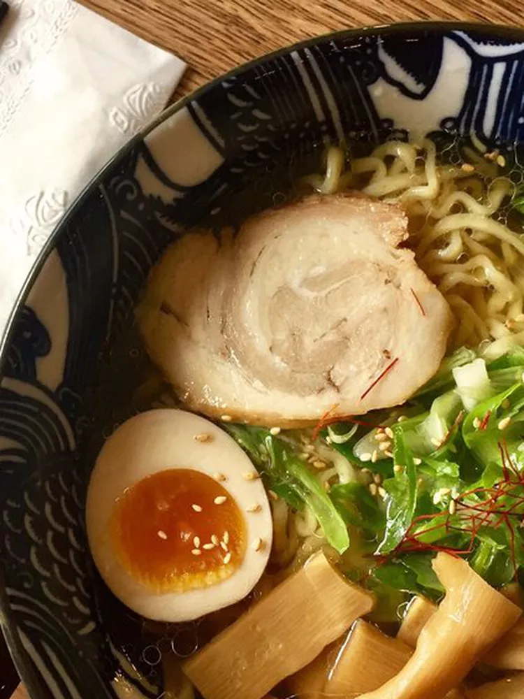

Hinodeya Ramen Bar

Surprisingly light dashi based broth that is not too oily unlike some other ramen styles (like tonkatsu). Tip: show up at 11:30a on a weekend and get a table with almost no wait.
Link: Hinodeya’s Website
Iza Ramen

Less known, but fabulously delicious ramen hidden in SoMa. Look for unusual styles like tsukemen and hiyashi chuka cold ramen, plus a sizeable menu of snacks and rice bowls.
Link: Pabu's Website
Orenchi Beyond

SF branch for the insanely popular Santa Clara Ramen joint. Fortunately, they actually take reservations, which is pretty unheard of for a ramen joint.